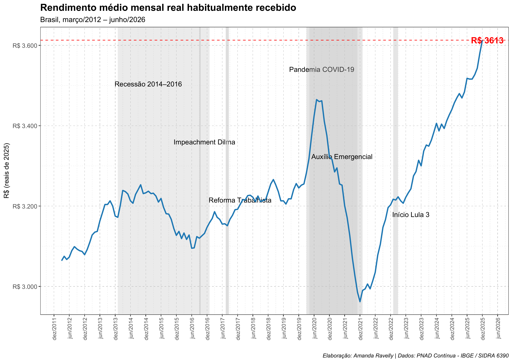

library(ggplot2)
library(sidrar)
library(tidyverse)
library(scales)
library(lubridate)
library(DT)Evolução do Rendimento Médio Mensal Real no Brasil
Análise exploratória a partir da PNAD Contínua (IBGE)
Introdução
Este relatório apresenta uma análise exploratória da evolução do rendimento médio mensal real no Brasil, a partir de dados da Pesquisa Nacional por Amostra de Domicílios Contínua (PNAD Contínua), do IBGE.
O objetivo é demonstrar, de forma descritiva, como esse indicador se comporta ao longo do tempo, utilizando um fluxo reprodutível que integra dados públicos, visualização e interpretação, sem a pretensão de estabelecer relações de causalidade.
Dados e fonte
Os dados utilizados foram obtidos por meio do Sistema IBGE de Recuperação Automática (SIDRA), correspondendo ao rendimento médio real habitualmente recebido, com valores deflacionados para preços constantes.
O período analisado compreende os anos disponíveis na base, conforme divulgação oficial do IBGE.
O processo metodológico envolveu:
seleção da tabela SIDRA correspondente ao rendimento médio mensal;
organização da série temporal;
tratamento e padronização dos valores monetários;
construção de visualizações para análise exploratória.
Esta análise possui caráter descritivo, não buscando estabelecer relações de causalidade, mas sim identificar tendências e oscilações relevantes ao longo do tempo.
Importação dos dados
Nesta etapa, os dados são importados para o ambiente R e preparados para análise. O código abaixo realiza a leitura das bases e a organização inicial das variáveis de interesse.
Carregando pacotes:
Acessando dados
# base completa
dados_brutos <- get_sidra(
api = "/t/6390/n1/all/v/5933/p/all"
)Tratamento dos dados
rendimentos <- dados_brutos %>%
mutate(
date = lubridate::ym(dados_brutos[[10]]),
Valor = as.numeric(dados_brutos[[5]])
) %>%
select(Valor, date)Último valor e data mais recente
ultimo_valor <- round(tail(rendimentos$Valor, 1), 1)
ultima_data <- tail(rendimentos$date, 1)Tabela interativa — dados brutos (antes da limpeza)
A tabela abaixo apresenta um recorte dos dados conforme disponibilizados originalmente pelo IBGE, antes da realização de qualquer procedimento de tratamento ou organização.
names(dados_brutos) [1] "Nível Territorial (Código)" "Nível Territorial"
[3] "Unidade de Medida (Código)" "Unidade de Medida"
[5] "Valor" "Brasil (Código)"
[7] "Brasil" "Variável (Código)"
[9] "Variável" "Trimestre Móvel (Código)"
[11] "Trimestre Móvel" datatable(
head(dados_brutos, 50),
options = list(
pageLength = 5,
scrollX = TRUE
),
caption = "Dados originais da PNAD Continua / SIDRA (antes do tratamento)"
)Tratamento dos dados
Após a importação, os dados passaram por procedimentos de limpeza e organização, incluindo seleção de variáveis, padronização de nomes e ajustes necessários para a análise.
dados_tratados <- dados_brutos %>%
mutate(
date = lubridate::ym(dados_brutos[[10]]),
Valor = as.numeric(Valor)
) %>%
select(date, Valor)Análise exploratória
A Figura 1 apresenta a evolução do rendimento médio mensal real no Brasil ao longo do período analisado.

Resultados
A trajetória do rendimento médio mensal real apresenta variações compatíveis com diferentes contextos econômicos enfrentados pelo país ao longo do período analisado. Destacam-se, entre outros fatores, a recessão observada a partir de meados da década de 2010, os efeitos da pandemia de COVID-19 sobre o mercado de trabalho e o movimento de recuperação econômica nos anos mais recentes.
Embora seja possível associar visualmente determinados pontos da série a eventos específicos, esta análise não permite inferir causalidade direta, devendo ser interpretada como um exercício de leitura descritiva dos dados.
Referências e links
IBGE – PNAD Contínua
https://www.ibge.gov.brSIDRA – Tabela 6390 (Variável 5933)
https://sidra.ibge.gov.br/tabela/6390Código-fonte (GitHub)
https://github.com/xmrvw/trabalho_relatorio_amanda_ravelly